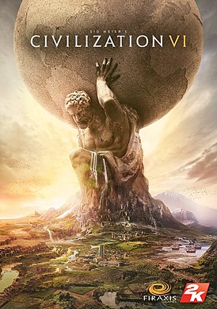

Fahrrad fahren
-
Radfahren als alltägliches Fortbewegungsmittel, Sport oder Freizeitbetätigung ist in praktisch jedem Alter möglich und auch für Menschen mit körperlichen Einschränkungen durchführbar,
da es sehr gelenkschonend ist. Im Gegensatz zum Laufen werden die Beine, Knie und Hüften entlastet, da man beim Radfahren üblicherweise sitzt.
Radfahren fördert die Fitness und dient dem Herz- und Kreislauftraining.

Bücher lesen
-
“Ein Verstand braucht Bücher, wie ein Schwert den Schleifstein.” Mit diesem Satz traf schon G.R.R. Martin, der Autor von “Das Lied von Eis und Feuer”, den Nagel auf den Kopf.
Genau wie jedes andere Körperteil muss auch der Verstand regelmäßig trainiert werden, um leistungsfähig und fit zu bleiben.

Civilization VI
-
Similar to previous installments, the goal for the player is to develop a civilization from an early settlement through many in-game millennia to become a world power and achieve one of several victory conditions, such as through military domination, technological superiority, or cultural influence, over the other human and computer-controlled opponents.
Players do this by exploring the world, founding new cities, building city improvements, deploying military troops to attack and defend from others, researching new technologies and civics advancements, developing an influential culture, and engaging in trade and negotiations with other world leaders.